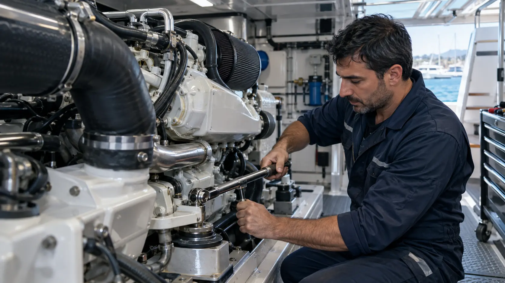

İstanbul · Marmara Bölgesi
Tekne motor tamiri ve mekanik bakım
Arıza kaynağını ölçümle belirliyor; periyodik bakımdan mekanik onarıma kadar motorunuz için kontrollü ve anlaşılır bir servis süreci yürütüyoruz.
Motorunuzun ihtiyacı kadar müdahale.
Motor modeli, çalışma saati ve arıza belirtileri birlikte değerlendirilir. Gereksiz parça değişimi yerine doğru teşhis ve planlı onarım hedeflenir.
Sık sorulan sorular
Dört adımda servis
Talep
Motor ve tekne bilgilerinizi paylaşın.
Ön teşhis
Belirtileri ve servis kapsamını netleştirelim.
Müdahale
Atölyede veya teknenizin yanında çalışalım.
Teslim
Kontrolleri ve yapılan işlemleri aktaralım.